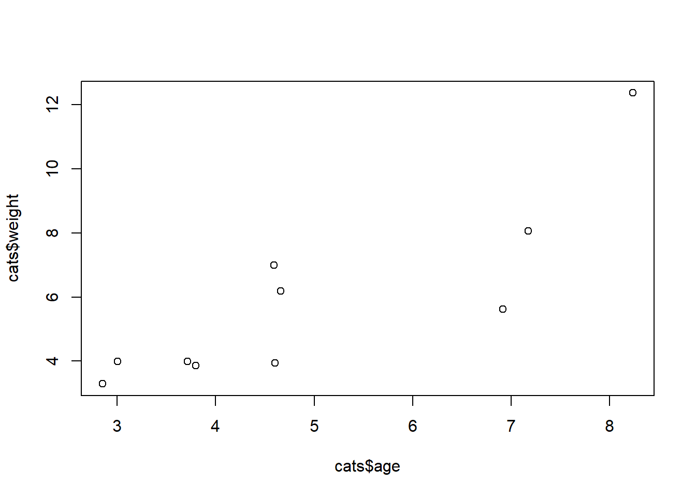
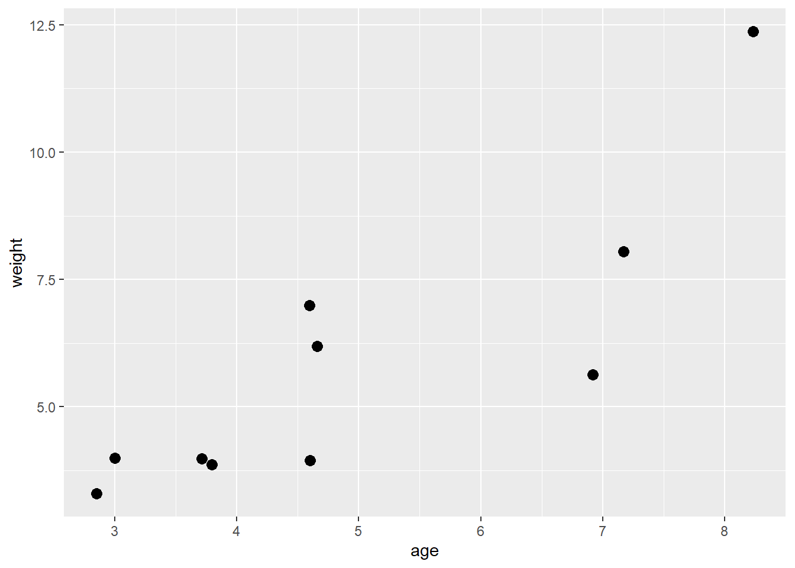
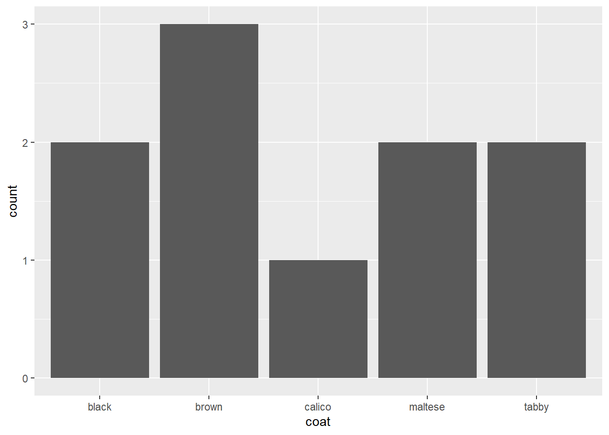
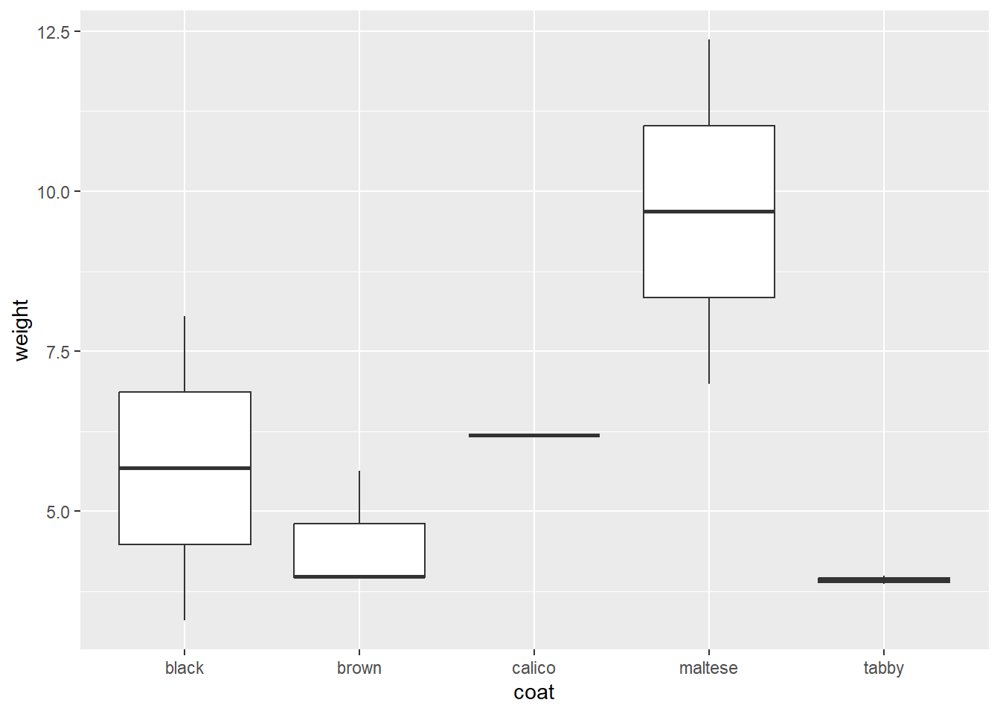
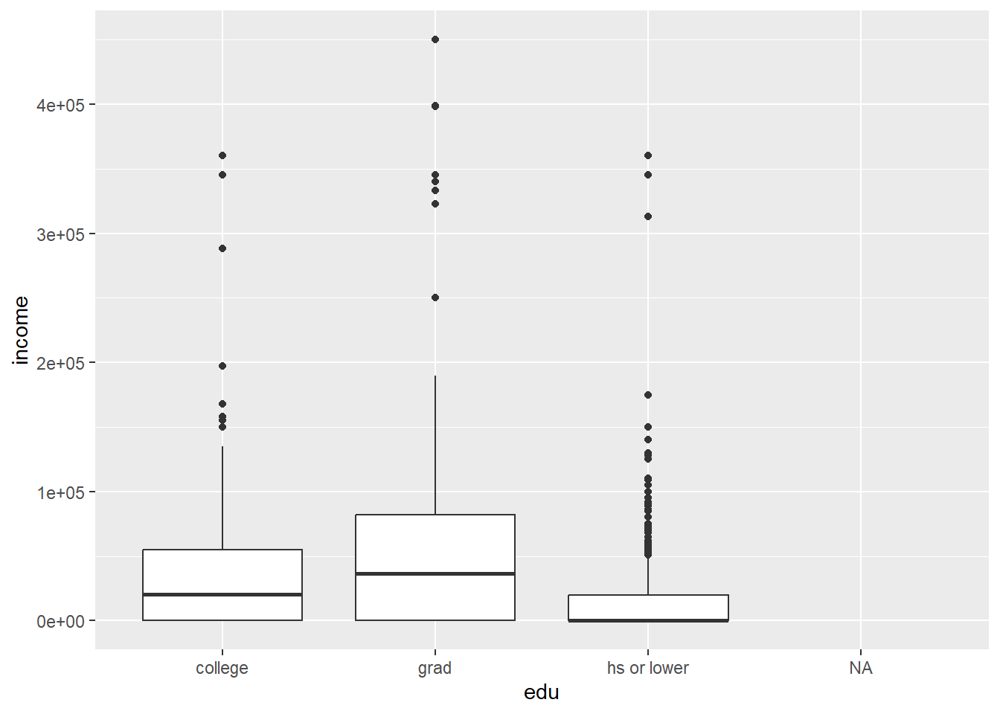
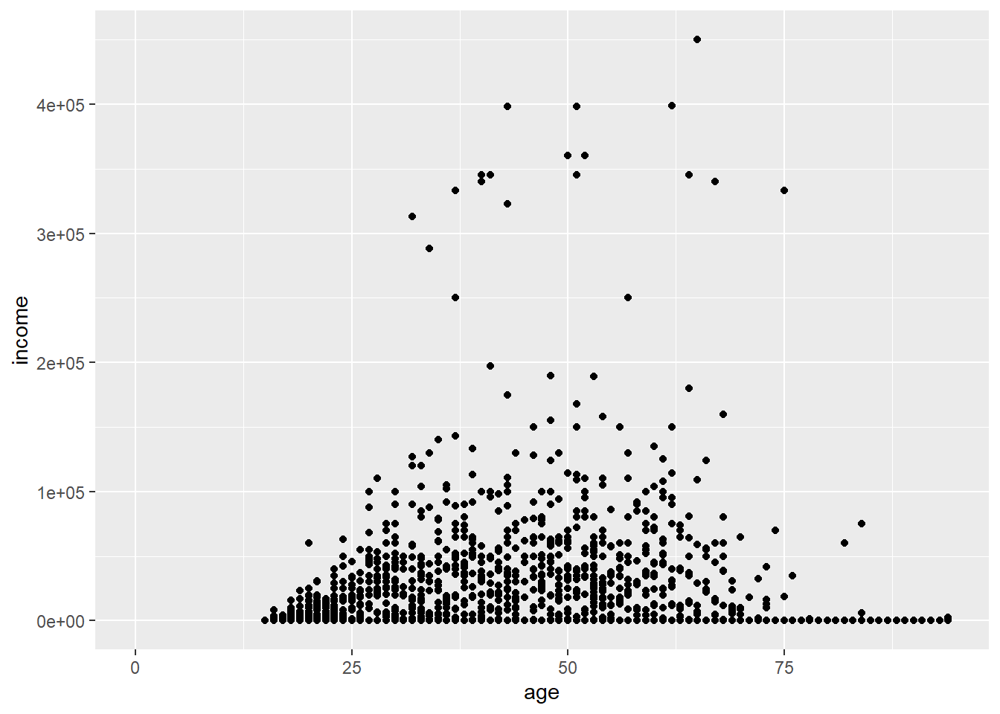
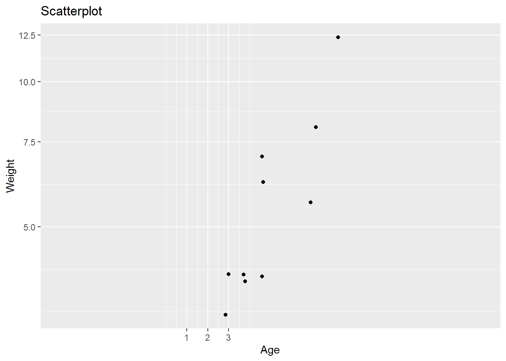
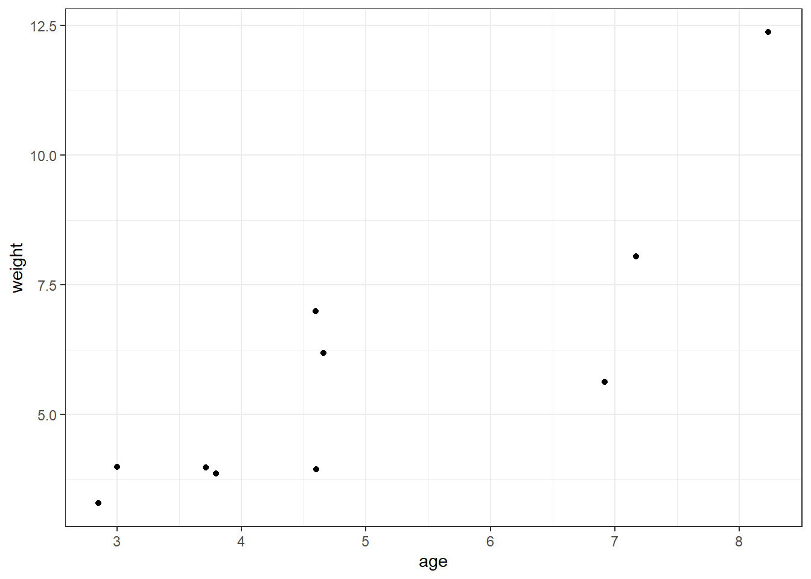
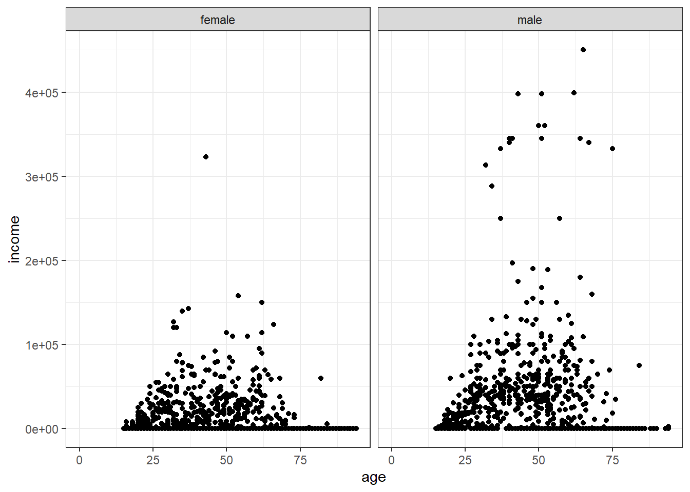

cats <- read.csv("data/herding-cats.csv")
## or
cats <- read.csv("https://raw.githubusercontent.com/AnnArborRUserGroup/AARUG-R-workshop/gh-pages/data/herding-cats-small.csv")Data Visualization
Learning Objectives
- Grammar of graphics concepts (geoms, aesthetics)
- Advanced plots (scales, facets, themes)
- Writing images (and other things) to file
Basic plots in R
When we are working with large sets of numbers it can be useful to display that information graphically. R has a number of built-in tools for basic graph types such as histograms, scatter plots, bar charts, boxplots and much more. We’ll test a few of these out here on the cats data.
Scatterplot
Let’s start with a scatterplot. A scatter plot provides a graphical view of the relationship between two sets of numbers.
Let’s make a scatterplot of birth weight by mother’s age.
plot(x = cats$age, y = cats$weight)
Each point represents a row in our dataset. The value on the x-axis is the mother’s age and the values on the y-axis correspond to the birth weight for the infant. For any plot you can customize many features of your graphs (fonts, colors, axes, titles) through graphic options
Advanced figures (ggplot2)
More recently, R users have moved away from base graphic options and towards a plotting package called ggplot2 that adds a lot of functionality to the basic plots seen above. The syntax is different but it’s extremely powerful and flexible. We can start by re-creating some of the above plots but using ggplot functions to get a feel for the syntax.
install.packages("ggplot2")Load the ggplot2 package.
library(ggplot2)Warning: package 'ggplot2' was built under R version 4.2.2The ggplot() function is used to initialize the basic graph structure, then we add to it. The basic idea is that you specify different parts of the plot, and add them together using the + operator.
We will start with a blank plot and will find that you will get an error, because you need to add layers.
ggplot(cats)
Geometric objects are the actual marks we put on a plot. Examples include:
- points (geom_point, for scatter plots, dot plots, etc)
- lines (geom_line, for time series, trend lines, etc)
- boxplot (geom_boxplot, for, well, boxplots!)
A plot must have at least one geom; there is no upper limit. You can add a geom to a plot using the + operator.
ggplot(cats) +
geom_point()Each type of geom usually has a required set of aesthetics to be set, and usually accepts only a subset of all aesthetics –refer to the geom help pages to see what mappings each geom accepts. Aesthetic mappings are set with the aes() function.
Examples include:
- position (i.e., on the x and y axes)
- color (“outside” color)
- fill (“inside” color) shape (of points)
- linetype
- size
Scatterplot
To start, we will add position for the x- and y-axis since geom_point requires mappings for x and y, all others are optional.
ggplot(cats) +
geom_point(aes(x = age, y = weight),
fill = "blue",
size = 3)
Barplot
A bar-plot is just for looking at the frequency of one categorical variable, such as coat.
ggplot(cats) +
geom_bar(aes(x = coat))
Boxplot
Now, you need a categorical variable (such as coat color) on your X-axis and a numerical variable (such as weight) on your y-axis.
ggplot(cats) +
geom_boxplot(aes(x = coat, y = weight))
Challenge
Recall the ACS 2012 data-set again. If you haven’t done the previous part, you can read it as follows:
acs <- read.csv("https://www.openintro.org/data/csv/acs12.csv")Create a boxplot for educational status verus annual income. Comment on what you see. Then create a scatterplot for age vs. income.
expand for full code
ggplot(acs) +
geom_boxplot(aes(x = edu, y = income))Warning: Removed 377 rows containing non-finite values (`stat_boxplot()`).
expand for full code
ggplot(acs) +
geom_point(aes(x = age, y = income)) Warning: Removed 377 rows containing missing values (`geom_point()`).
Scales
Scales control the mapping between data and aesthetics.
ggplot(cats) +
geom_point(aes(x = age, y = weight)) +
scale_x_continuous(name = "Age",
breaks = c(1, 2, 3),
limits = c(-5, 15)) +
scale_y_continuous("Weight", trans = "log") +
ggtitle(label = "Scatterplot")
Themes
The ggplot2 theme system handles non-data plot elements such as:
- Axis labels
- Plot background
- Facet label backround
- Legend appearance
There are built-in themes we can use, or we can adjust specific elements. We can add additional aesthetics by mapping them to other variables in our dataframe. For example, the color of the boxplots will reflect low birth weight.
ggplot(cats) +
geom_point(aes(x = age, y = weight)) +
theme_bw()
Facets
Facets display subsets of the dataset in different panels. Let’s use the facet_grid function to lay out panels in a grid. Each panel will have the same geometric objects.
tfz, fig.align='center'} ggplot(cats) + geom_point(aes(x = age, y = weight)) + xlab("Mother's age") + ylab("Birth weight") + facet_grid(. ~ coat) + theme_linedraw()
Here we have two panels one for each factor level of coat. The panels are layed out in columns because the expression . ~ coat
Challenge
Recall the ACS 2012 data-set again. If you haven’t done the previous part, you can read it as follows:
acs <- read.csv("https://www.openintro.org/data/csv/acs12.csv")Create a a scatterplot for age vs. income but facet using gender using
theme_bwas your theme.
expand for full code
ggplot(acs) +
geom_point(aes(x = age, y = income)) +
facet_grid(. ~ gender) +
theme_bw()Warning: Removed 377 rows containing missing values (`geom_point()`).
Writing figures to file
There are two ways in which figures and plots can be output to a file (rather than simply displaying on screen).
The first (and easiest) is to export directly from the RStudio ‘Plots’ panel, by clicking on Export when the image is plotted. This will give you the option of png or pdf and selecting the directory to which you wish to save it to.
The second option is to use R functions in the console, allowing you the flexibility to specify parameters to dictate the size and resolution of the output image. Some of the more popular formats include pdf(), png, and svg.
Initialize a plot that will be written directly to a file using pdf, png etc. Within the function you will need to specify a name for your image, and the with and height (optional). Then create a plot using the usual functions in R. Finally, close the file using the dev.off() function. There are also bmp, tiff, and jpeg functions, though the jpeg function has proven less stable than the others.
ggplot(example_data) +
geom_boxplot(aes(x = cit, y =....) +
ggtitle(...) +
xlab(...) +
ylab(...) +
theme(panel.grid.major = element_line(...),
axis.text.x = element_text(...),
axis.title = element_text(...),
axis.text = element_text(...)Resources
We have only scratched the surface here. There are many plotting features we haven’t covered.
plotting in Base R:
- John Maindonald’s Using R for Data Analysis and Graphics PDF
ggplot2:
- ggplot reference site
- Winston Chang’s excellent Cookbook for R
- ggplot2: Elegant Graphics for Data Anaysis
Much of the material here was adapted from Introduction to R graphics with ggplot2 Tutorial at IQSS.